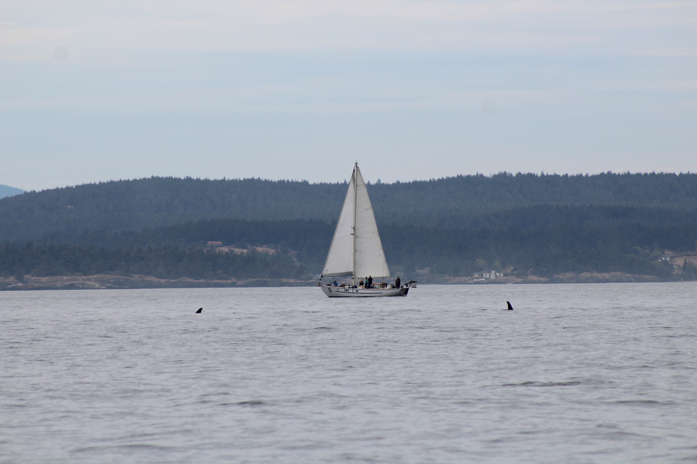
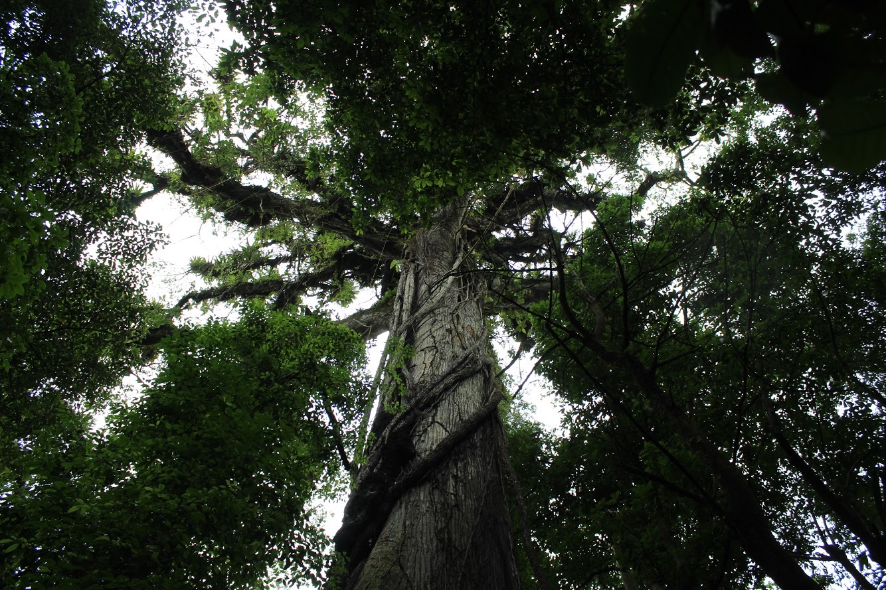
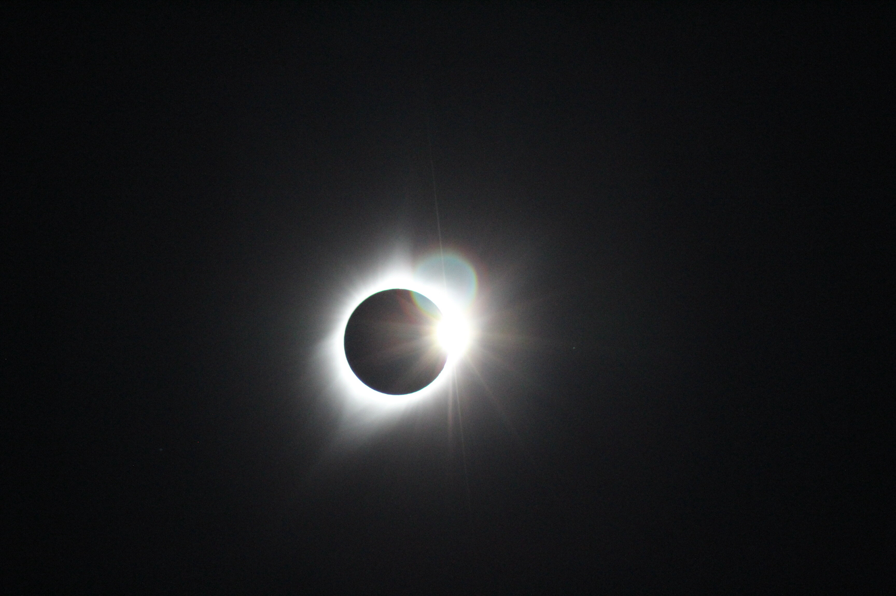
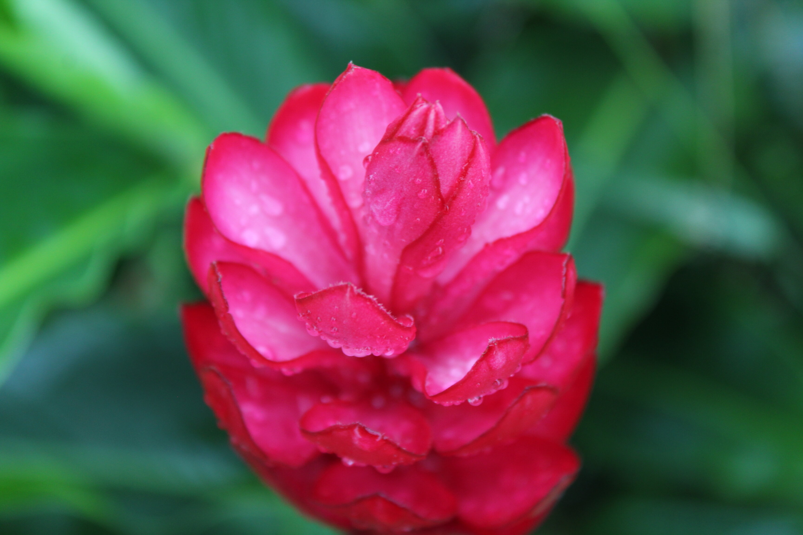

1 / 6

A sailboat surrounded by orcas in the Pacific Northwest.
2 / 6

The tallest tree in the cloud forest, Costa Rica.
3 / 6

A friendly neighborhood horse.
4 / 6

The exact moment the sun came out from behind the moon in a solar eclipse.
5 / 6

A flower that collected the morning dew.
6 / 6

A hermit crab hiding in his shell on the beach.